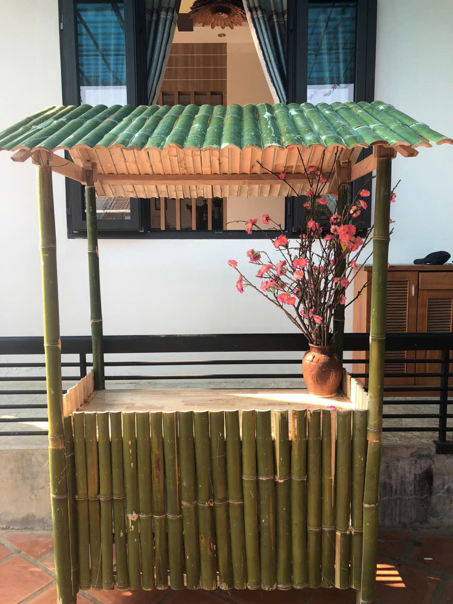
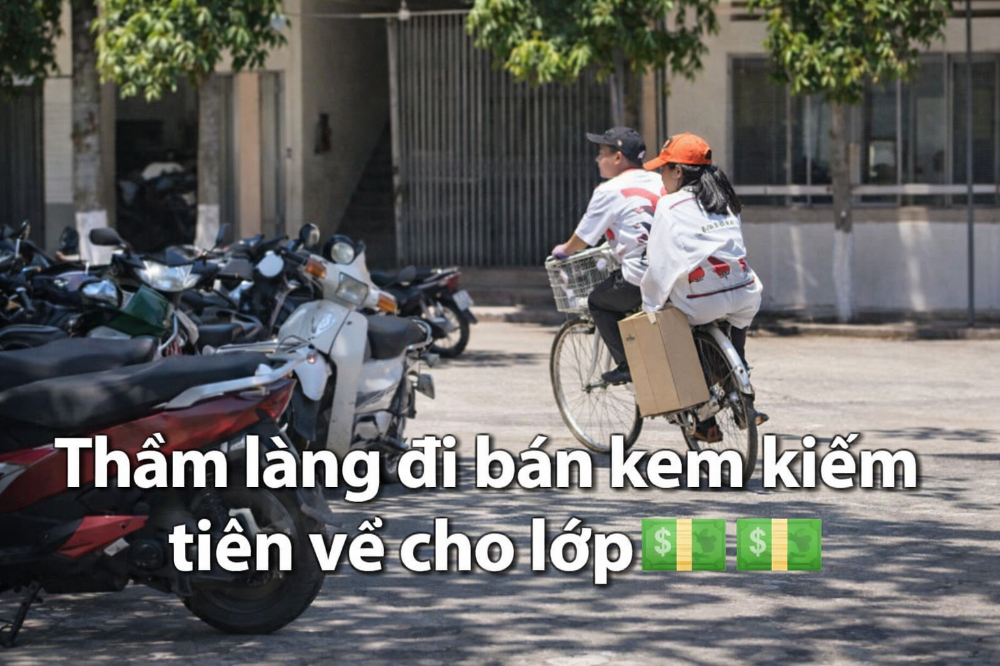

Hoạt động Trải nghiệm thực tế
Tự tin giao tiếp – Học cách quản lý – Cùng nhau phát triển
Rèn luyện kỹ năng giao tiếp & thuyết phục
Lên ý tưởng, trang trí và phát triển gian hàng
Học cách quản lý, hợp tác và làm việc nhóm
Trong chuỗi hoạt động chào mừng ngày 26/3, chương trình trải nghiệm bán hàng thông qua gian hàng ẩm thực đã mang đến một sân chơi bổ ích và thực tế cho học sinh. Các lớp tự lên ý tưởng, chuẩn bị nguyên liệu, trang trí gian hàng và trực tiếp giới thiệu, bán các món ăn do mình thực hiện.

Hoạt động này không chỉ tạo nên không khí sôi động, hấp dẫn mà còn giúp học sinh rèn luyện nhiều kỹ năng quan trọng như làm việc nhóm, giao tiếp, quản lý thời gian và tính toán chi phí – lợi nhuận. Qua đó, mỗi bạn đều có cơ hội trải nghiệm vai trò của người kinh doanh nhỏ, học cách chịu trách nhiệm và phối hợp cùng tập thể.

Gian hàng ẩm thực không chỉ mang lại niềm vui mà còn góp phần giáo dục kỹ năng sống, tinh thần sáng tạo và sự năng động của tuổi trẻ. Đây là hoạt động ý nghĩa, giúp ngày 26/3 thêm phong phú và đáng nhớ.